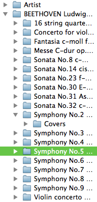

Folders Tree

The Folders Tree simplifies navigation through your music library. To add files from a folder simply click on the folder name. Files that are in this folder will be placed into the current tab. If you have some not saved files, Qoobar will prompt you to save them.
If you want to add all files from a folder, including any nested folders, choose the List this folder with all subfolders context menu item.
By default the Folders Tree root is set to the uppermost directory (that is /). You can change this settings either in the Preferences Dialog, or right in the Folders Tree: in the context menu choose Set as folder tree root.
© 2009-2016 Alex Novichkov